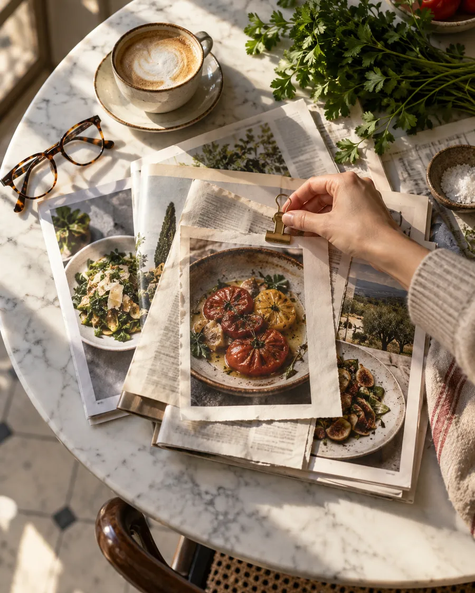

1
Rubrique stratégie
Stratégie RP
Les RP, c’est bien plus qu’un article dans un magazine : c’est une rencontre entre vous, votre histoire et le public.
Je conçois et pilote des campagnes de presse sur mesure, pour faire rayonner votre restaurant, votre produit ou votre artisanat dans les bons médias, au bon moment.
Mon objectif : transformer votre savoir-faire en récit captivant, et vos valeurs en visibilité durable.
Illustratif
Les bons médias, au bon moment : chaque campagne vise les rédactions qui comptent pour votre projet.